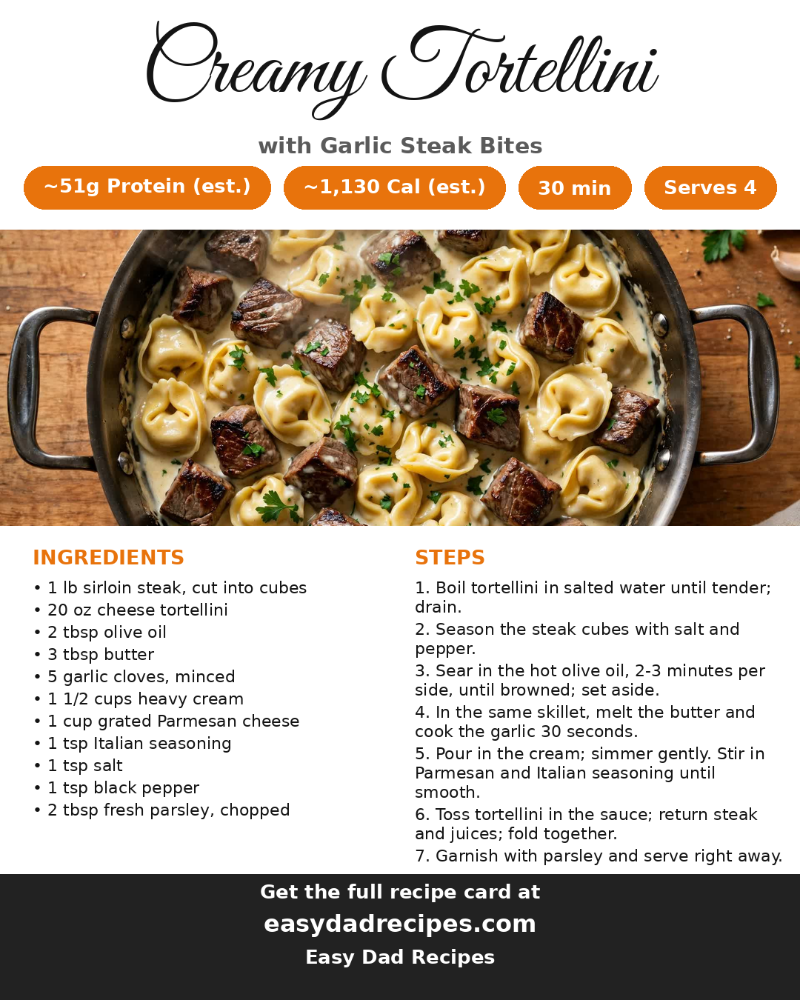

2026-10-26
Some nights call for a salad. This is not that night. This is seared sirloin bites with a hard garlic-butter crust, pillowy cheese tortellini, and a Parmesan cream sauce built right in the steak drippings — the kind of skillet dinner that makes everybody drift into the kitchen asking when it's ready. Thirty minutes, one pan for the main event, and about 51 grams of protein in every serving.
The whole dish is one long flavor handoff. The steak sears first and leaves its browned bits behind; the garlic butter melts into those drippings; the cream simmers in the same pan and picks up every bit of it; and the Parmesan turns it into a sauce that coats the tortellini like it was made for it — because by then, it was. Nothing gets washed between steps, and nothing needs to. The steak goes back in at the end with its resting juices, so it stays tender instead of simmering itself tough in the sauce.
A pinch of red pepper flakes in the garlic butter wakes the whole pan up. A handful of baby spinach folded in at the end wilts right into the sauce if you want a vegetable in there. And if sirloin isn't on sale, strip steak or even chicken thighs cut into chunks follow the exact same script — just keep the sear hard and the sauce in the same pan.
One honest note: at roughly 1,130 calories a serving by our estimate, this is the Friday-night skillet, not the Tuesday one. The protein earns it.
Here's the card — save it for next time:

Want the printable version? Get it here: Creamy Tortellini with Garlic Steak Bites
Credit: MedTaste (@medit.erraneanfood)
— Dad
One email a week — the new recipes and the week's meal plan.
Subscribe free